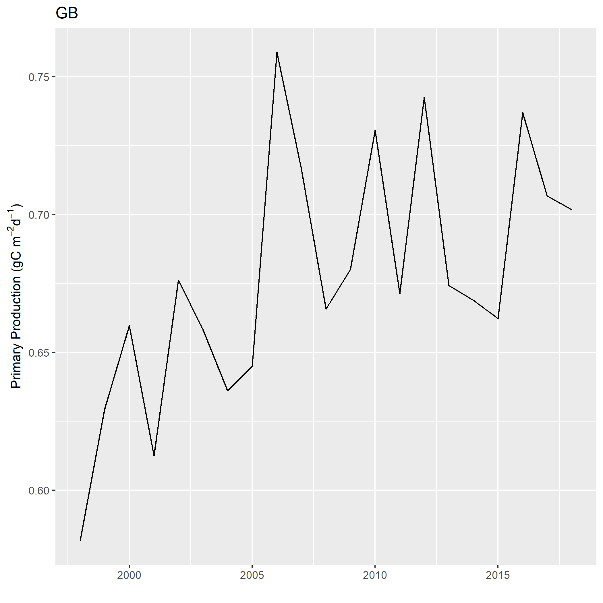

1 Primary Production Required
Description: Time Series of Primary Production Required to sustain reported landings.
Found in: State of the Ecosystem - Gulf of Maine & Georges Bank (2020+), State of the Ecosystem - Mid-Atlantic (2020+)
Indicator category: Database pull with analysis; Published methods
Contributor(s): Michael Fogarty, Andrew Beet
Data steward: Andrew Beet, andrew.beet@noaa.gov
Point of contact: Andrew Beet, andrew.beet@noaa.gov
Public availability statement: Source data is not publicly availabe due to PII restrictions.
1.1 Methods
The index is a measure of the impact of fishing on the base of the foodweb. The amount of potential yield we can expect from a marine ecosystem depends on the amount of production entering at the base of the food web, primarily in the form of phytoplankton; the pathways this energy follows to reach harvested species; the efficiency of transfer of energy at each step in the food web; and the fraction of this production that is removed by the fisheries. Species such as scallops and clams primarily feed directly on larger phytoplankton species and therefore require only one step in the transfer of energy. The loss of energy at each step can exceed 80-90%. For many fish species, as many as 2-4 steps may be necessary. Given the trophic level and the efficiency of energy transfer of the species in the ecosystem the amount phytoplankton production required (PPR) to account for the observed catch can be estimated.
The index for Primary Production Required (PPR) was adapted from (Pauly and Christensen 1995).
\[PPR_t = \sum_{i=1}^{n_t} \left(\frac{landings_{t,i}}{9}\right) \left(\frac{1}{TE}\right)^{TL_i-1}\]
where \(n_t\) = number of species in time \(t\), \(landings_{t,i}\) = landings of species \(i\) in time \(t\), \(TL_i\) is the trophic level of species \(i\), \(TE\) = Trophic efficiency. The PPR estimate assumes a 9:1 ratio for the conversion of wet weight to carbon and a 15% transfer efficiency per trophic level, (\(TE\) = 0.15)
The index is presented as a percentage of estimated primary production (PP) available over the geographic region of interest, termed an Ecological Production Unit (EPU). The scaled index is estimated by dividing the PPR index in year \(t\) by the estimated primary production in time \(t\).
\[scaledPPR_t = \frac{PPR_t}{PP_t}\]
The species selected in each year were determined by their cumulative contribution to total landings. A threshold of at least 80% of the total landings is used.
1.1.1 Data sources
Data for this index come from a variety of sources. The landings data come from the Commercial Fishery Database (CFDBS), species trophic level information come from fishbase and sealifebase, and primary production estimates are derived from satellites. Some of these data are typically not available to the public.
1.1.2 Data extraction
Landings are extracted from the commercial fisheries database (CFDBS) using the methods described in the chapter Commercial Landings Data.
Trophic level information for each species is obtained from fishbase and sealifebase using the R package rfishbase (Froese and Pauly 2019) in tandem with the package indexPPR.
Primary Production is estimated using the methods described in the chapter Chlorophyll a and Primary Production.
1.1.3 Data analysis
Annual (wet weight) landings are calculated for each species for a given EPU. For each year the landings are sorted in descending order by species and the cumulative landings are calculated. The top species that accounted for 80% of total cumulative landings are selected. The trophic level for each of these species are then obtained from fishbase/sealifebase. At this point the PPR index is calculated. The units of the index are \(gCyear^{-1}\) for the EPU. The index is converted to \(gCm^{-2}year^{-1}\) by dividing by the area (in \(m^2\)) of the EPU.
To normalize the index the total Primiary Production for the given EPU is required. This is calculated as described in the chapter Chlorophyll a and Primary Production. The units are also converted to \(gCm^{-2}year^{-1}\).
The index is then normalized by dividing the index in year t by the total primary production in time \(t\).
1.1.4 Plotting
Four plots are produced for each EPU:
- The normalized PPR index (along with the associated landings).
- Total primary production
- Mean trophic level of the species included in the index (weighted by their landings)
- Species composition of landings
All created using the indexPPR
See the workedExample vignette in the indexPPR package for plotting code.
1.1.4.1 Georges Bank (GB)
1.1.4.2 Gulf of Maine (GOM)
